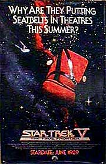
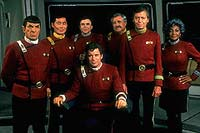
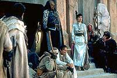
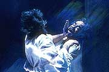
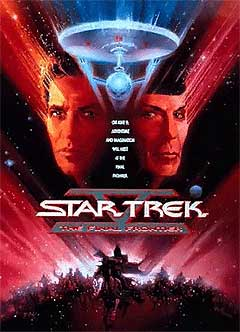
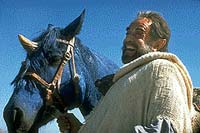

|
Quase
na Fronteira Final
 A
quinta edio de Jornada nas Estrelas no cinema quase ps
fim bem-sucedida carreira de aventuras da tripulao da
Enterprise. Dessa vez, Willian Shatner fez dobradinha, sentando-se
na cadeira do capito e do diretor do filme, em clara manifestao
de cimes pelo fato de Leonard Nimoy ter dirigido com sucesso os
dois filmes anteriores. A
quinta edio de Jornada nas Estrelas no cinema quase ps
fim bem-sucedida carreira de aventuras da tripulao da
Enterprise. Dessa vez, Willian Shatner fez dobradinha, sentando-se
na cadeira do capito e do diretor do filme, em clara manifestao
de cimes pelo fato de Leonard Nimoy ter dirigido com sucesso os
dois filmes anteriores.
 A
idia de Shatner era aproveitar algum elementos j apresentados na
srie original e na srie animada e juntar com a misso de deter
a ao de um ser aliengena que diz ser o Todo-Poderoso ajudado
por um Vulcano sonhador que engana os outros com um tipo de
sentimentalismo barato.
Shatner se inspirou nos pregadores religiosos que anunciavam sucesso
e dinheiro rpido vendendo a felicidade a muitos incautos
bem-intencionados atravs da televiso. Tudo isso poderia
funcionar bem se estivesse relacionado profunda amizade entre
Kirk, Spock e McCoy. Este filme no poderia ser a continuao
criada desde o filme II; o desdobramento teria de ser interrompido,
dando lugar a uma nova trama que fala da busca do homem pelo Paraso
e por seu criador.
Esta busca pode ser equivocada, pois a felicidade e a presena
divina esto de fato no corao humano, pois, cada um de ns,
indivduo e sociedade, cria uma imagem prpria de Deus de acordo
com nossas aspiraes e padres culturais (a origem desta idia
no mundo moderno est na afirmao do pensador alemo Ludwig
Feuerbach de que, ao contrrio do que se diz, "o homem cria
Deus sua imagem e semelhana").
 Shatner
fincou o p para que Harve Bennett permanecesse na produo
executiva. Houve uma certa relutncia porque Bennett se
desentendera seriamente com Leonard Nimoy, mas acabou topando a
parada. Ele chegou at mesmo a fazer uma ponta no filme,
interpretando o almirante que d a ordem da misso da Enterprise:
livrar o Planeta da Paz Galtica (Nimbus III) do domnio de um lder
rebelde chamado Sybok, que tomou o controle da populao e de
representantes do Imprio Klingon, do Imprio Romulano e da Federao.
At que o roteiro ficasse pronto, muito se mexeu e acrescentou.
Shatner confessou que sua autoria somente at a primeira metade
do filme. Gene Roddemberry subiu nos tamancos quando soube da
sinopse, porque era contra ver sua obra tratar de um tema to sensvel
para a audincia. Poderia criar muita confuso, pois h vrios
credos religiosos e muitos tipos de deuses; da, as pessoas
ficariam ofendidas por terem ou no terem sido citadas em sua
doutrina espiritual.
 E
ainda, apresentar a tripulao da Enterprise como um bando de
idiotas seria o fim de tudo o que ele criou. Deep Space Nine
recebeu crtica semelhante por muita gente quando foi criada por
Rick Berman, s custas da herana de Jornada nas Estrelas.
A religio pode ser um assunto mais explosivo do que um torpedo fotnico...
Frank Mancuso, chefo da Paramount, tambm achava perigoso e
concordava com os argumentos de Roddenberry. Este, por sua vez,
mandou alguns longos memorandos para Shatner e Bennett, demonstrando
sua preocupao com o sucesso do filme e com a credibilidade de
Jornada. Depois de vrias idas e vindas, o roteiro foi mexido mais
uma vez para alterar um ponto que Roddenberry, Nimoy e De Kelley
achavam fundamental: Kirk, Spock e McCoy no poderiam brigar a
ponto de haver traio entre eles. A profunda amizade entre o trio
principal no poderia ser tocada. Esta idia foi radicalmente
defendida at o fim, revelia do que queria Shatner. Ele acabou
acusando Roddenberry de se opor sua idia por ter ficado com cimes,
j que algo do que ele havia proposto anteriormente para um roteiro
do primeiro filme e foi recusado, agora teve aprovao no roteiro
do quinto filme.
O incio das filmagens foi tambm o incio de muitos problemas
para um oramento de 30 milhes de dlares e uma histria de
grande sucesso por detrs. A responsabilidade era grande, tendo que
fazer um produto de qualidade dentro do cronograma estipulado. No
houve atrasos significativos, mas o resultado ficou aqum do
desejado.
 Muita
gente falou mal dos efeitos especiais de baixa qualidade feitos s
pressas por uma equipe de segunda linha, j que a ILM estava
ocupada com a produo de "Indiana Jones". O oramento
j tinha estourado e no dava mais para acertar as coisas.
Outro cavalo de batalha foi a exigncia da Paramount para que o
filme s tivesse uma hora e quarenta e cinco minutos, a fim de ser
programado pelos cinemas duas vezes na mesma noite. Bennett teve que
cortar vrias cenas que Shatner tinha procurado caprichar, depois
de ter enfrentado greve de motoristas, calor do deserto, insetos,
brigas com a equipe tcnica, imprevistos mil e sua inexperincia
atrs das cmeras.
No fim de tudo, o resultado foi considerado regular pelo pblico e
pela crtica. Para os trekkers, foi o pior possvel, embora tenha
faturado US$ 50 milhes nas bilheterias. Shatner e Bennett se
defenderam dizendo que a situao era muito singular, porque os fs
j tinham uma nova srie indita de Jornada na televiso (A Nova
Gerao) e os cinemas exibiam verdadeiros campees de bilheteria
como "Batman" e "Indiana Jones".
certo que h srios problemas com "Jornada nas Estrelas
V: A ltima Fronteira", mas este foi um filme de certa
forma especial porque fala da amizade e do companheirismo passando
por bons e maus momentos, da aventura de viver buscando a felicidade
sem poder se livrar do sofrimento.
Assim, nos faz pensar em algumas pessoas importantes para ns,
alguns to ou mais do que muitos familiares. O tempo passa, mas as
boas e verdadeiras amizades ficam. As cenas no acampamento do parque
no incio e no fechamento do filme, o enfrentamento de
"Deus" por ter atingido seus amigos e resistido a
responder a uma simples e desafiante pergunta ("para que Deus
precisa de uma nave?") so exemplos do sentimento de Kirk,
junto com a certeza de que s poderia morrer se estivesse sem a
companhia de seus amigos.
 Spock
passou por maus pedaos ao saber que o rebelde vilo era na
verdade seu meio-irmo, Sybok, um vulcano dissidente, defensor do
abandono da lgica e do apego s paixes para chegar
felicidade. Pior ainda foi mostrar Spock como um rejeitado por seu
pai quando criana por ser demasiado humano. Estas coisas no
funcionaram nada bem para um personagem amadurecido e bem resolvido
como meio humano, meio vulcano.
McCoy mostrado como um grande frustrado por no poder curar seu
pai, mesmo sendo um bom mdico. ainda mostrado como um grande
babaca por ter sido engabelado por Sybok e acreditar em
"Deus" at ver seu amigo experimentar a "Sua"
ira.
Uhura, Chekov, Sulu e Scott tambm caram no "conto do vigrio"
promotor do paraso ilusrio, assim como o embaixador da Federao,
os Klingons e a diplomata Romulana. Pelo menos, vemos Uhura cantando
e danando, balanando as pernas para enganar os guardas da Cidade
Paraso.
A Romulana e a oficial Klingon so tambm responsveis por manter
em alta a beleza da sensualidade feminina. Mas ver Scott batendo a
testa na coluna de uma nave que ele conhece mais do que a palma da
sua mo ridculo, do mesmo modo que Chekov fazendo cara de otrio
quando Kirk ordena um "plano B", depois de ter tentado
enganar Sybok se passando por capito da nave.
Sybok, francamente, um arremedo de palhao de circo misturado
com vendedor de indulgncias e a cpia mal acabada de vigarista
(Harry Mudd se sairia muito melhor). Ainda bem que Sean Connery
(Sybok uma brincadeira dos roteiristas com o seu nome) no
aceitou o papel, por causa de sua grande participao em
"Indiana Jones". Ele iria entrar numa canoa furada em direo
ao abismo profundo.
 S
mesmo Jonathan Frakes e seu bom humor para homenagear Jornada V
na cena final de "Jornada nas Estrelas - Primeiro
Contato", pois o filme foi colocado no "index" e
considerado apcrifo pelo cnone da doutrina
"trekker", embora faa parte da histria
"oficial", determinada pela Paramount.
Cludio
Silveira escreve quinzenalmente sobre os filmes com
exclusividade para a Trek Brasilis
|